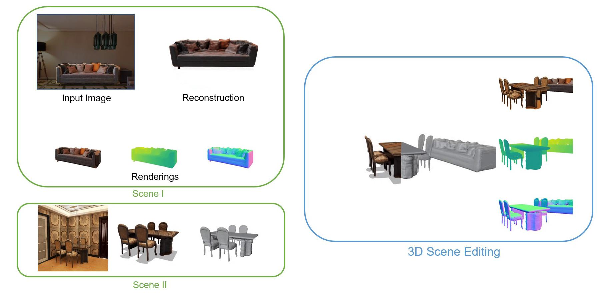

Publications

Hello! I am a first-year Ph.D student in the Department of Automation, Tsinghua University, advised by Prof. Song-Chun Zhu.
Before beginning my Ph.D study, I received my B.S. in the School of Electronic and Information Engineering, Beihang University.
I am also a research intern at Beijing Institute for General Artificial Intelligence(BIGAI),
supervised by Dr. Yixin Chen and Dr. Siyuan Huang.
My research interests lie in computer vision, 3D scene understanding and neural implict representation for general shape.
I currently study in the problem of neural implict representation for 3D reconstruction.